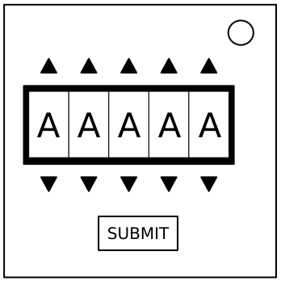

On the Subject of Password
Fortunately this password doesn’t seem to meet standard government security requirements: 22 characters, mixed case, numbers in random order without any palindromes above length 3.
The buttons above and below each letter will cycle through the possibilities for that position.
Only one combination of the available letters will match a password below.
Press the submit button once the correct word has been set.
🇨🇦 English (Version 1)
🇪🇬 (3-ar نسخة) العربية
🇨🇿 Čeština (Verze 2-cs)
🇨🇿 čeština „CS V1“
🇩🇰 Dansk (Version 1-da)
🇩🇰 Dansk »DA V1«
🇩🇪 Deutsch (Version 1-de)
🇩🇪 Deutsch „DE V1“
🗺️ Esperanto (Versio 2-eo)
🗺️ Esperanto ‹EO V1›
🇪🇸 Español (Versión 1-es)
🇪🇸 Español “ES V1”
🇪🇪 Eesti „ET V1“
🇫🇮 Suomi (Versio 1-fi)
🇫🇮 Suomi ”FI V1”
🇫🇷 Français (Version 1-fr)
🇫🇷 Français « FR V1 »
🇮🇱 (2-he גרסה) עברית
🇮🇱 "HE V1" עברית
🇭🇺 Magyar (Változat 2-hu)
🇮🇹 Italiano (Versione 1-it)
🇮🇹 Italiano «IT V1»
🇯🇵 日本語 (バージョン 1-ja)
🇯🇵 日本語 「JP V2」
🇰🇷 한국어 (버전 1-ko)
🇰🇷 한국어 『KO V1』
🇳🇱 Nederlands (Versie 2-nl)
🇳🇱 Nederlands “NL V1”
🇳🇴 Norsk (Versjon 2-nb)
🇳🇴 Norsk "NO V1"
🇵🇱 Polski (Wersja 2-pl)
🇵🇱 Polski "PL V1"
🇧🇷 Português-Brasil (Versão 2-pt-BR)
🇧🇷 Português do Brasil “PT V1”
🇵🇹 Português-Portugal (Versão 3-pt-PT)
🇷🇴 Română (Versiune 1-ro)
🇷🇺 Русский (Версия 2-ru)
🇷🇺 Русский «RU V2»
🇸🇪 Svenska (Version 1-sv)
🇸🇪 Svenska ”SV V1”
🇹🇭 Thai (ภาษาไทย) (พิมพ์ครั้งที่ 1-th)
🇹🇭 ไทย “TH V1”
🇹🇷 Türkçe (Versiyon 1-tr)
🇺🇦 Українська (Версія 1-uk)
🇨🇳 简体中文 (版本 1-zh-CN)
🇨🇳 简体中文 "ZHS V1"
🇹🇼 繁體中文 (版本 1-zh-TW)
🇨🇦 English "IN V0"
about
after
again
below
could
every
first
found
great
house
large
learn
never
other
place
plant
point
right
small
sound
spell
still
study
their
there
these
thing
think
three
water
where
which
world
would
write